Целью данной работы является получение навыков настройки межсетевого экрана в Linux в части переадресации портов и настройки Masquerading.
На основе существующего файла описания службы ssh создадим файл с собственным описанием. Перейдём в каталог служб и посмотрим содержимое созданного файла (рис. @fig-1):
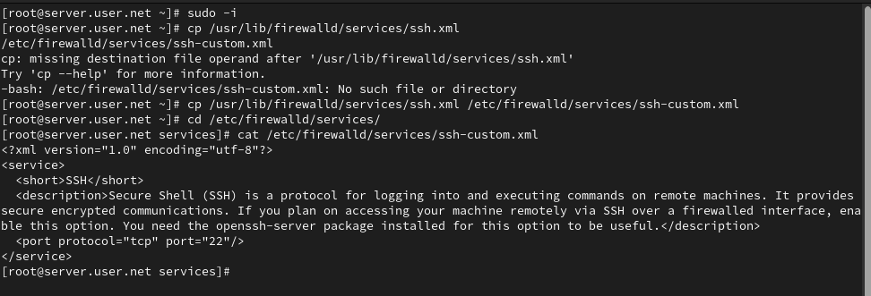
Откроем файл описания службы на редактирование и заменим порт 22 на новый порт (2022). В этом же файле скорректируем описание службы для демонстрации, что это модифицированный файл службы (рис. @fig-2):
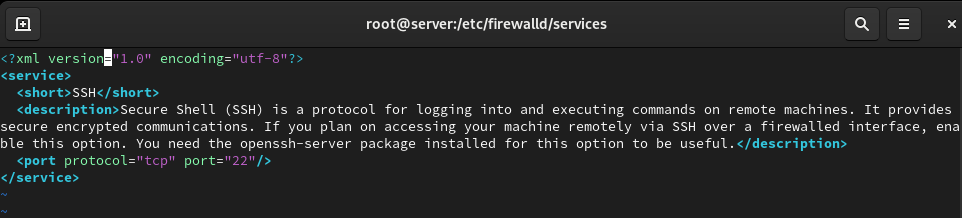
Просмотрим список доступных FirewallD служб, чтобы убедиться, что наша новая служба ещё не отображается (рис. @fig-3):
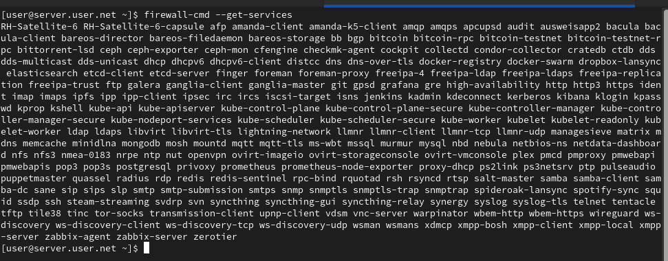
Перегрузим правила межсетевого экрана с сохранением информации о состоянии и вновь выведем на экран список служб, а также список активных служб. Убедимся, что созданная нами служба отображается в списке доступных для FirewallD служб, но не активирована (рис. @fig-4):
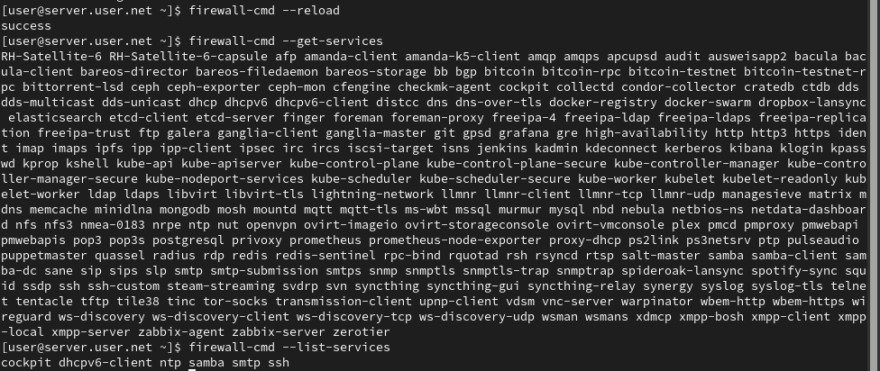
Добавим новую службу в FirewallD и выведем на экран список активных служб, чтобы убедиться в её активации (рис. @fig-5):
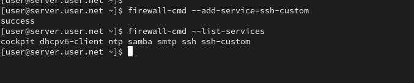
Организуем на сервере переадресацию с порта 2022 на порт 22 (рис. @fig-6):
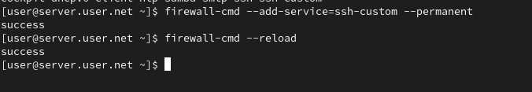
На клиенте попробуем получить доступ по SSH к серверу через порт 2022 (рис. @fig-7):
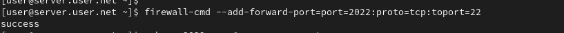
На сервере посмотрим, активирована ли в ядре системы возможность перенаправления IPv4-пакетов (рис. @fig-8):
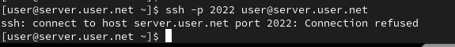
Включим перенаправление IPv4-пакетов на сервере и затем включим маскарадинг (рис. @fig-9):
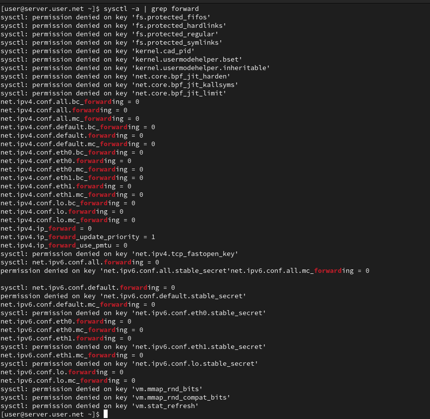
На клиенте проверим доступность выхода в Интернет после настройки маскарадинга (рис. @fig-10):
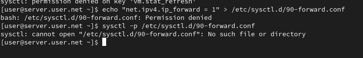
На виртуальной машине server перейдём в каталог для внесения изменений в настройки внутреннего окружения, создадим в нём каталог firewall, в который поместим в соответствующие подкаталоги конфигурационные файлы FirewallD. В каталоге создадим файл firewall.sh (рис. @fig-11):
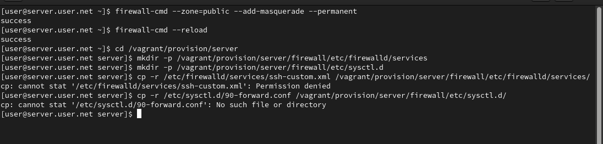
Откроем файл firewall.sh на редактирование и пропишем в нём скрипт из лабораторной работы. Для отработки созданного скрипта во время загрузки виртуальной машины server в конфигурационном файле Vagrantfile добавим соответствующую запись (рис. @fig-12):
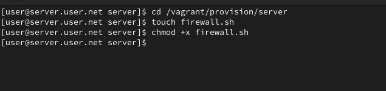
В ходе выполнения лабораторной работы были получены навыки настройки межсетевого экрана в Linux в части переадресации портов и настройки Masquerading.
Где хранятся пользовательские файлы
firewalld?
В firewalld пользовательские файлы хранятся в директории
/etc/firewalld/.
Какую строку надо включить в пользовательский файл
службы, чтобы указать порт TCP 2022?
Для указания порта TCP 2022 в пользовательском файле службы, вы можете
добавить строку в секцию port следующим образом:
<port protocol="tcp" port="2022"/>
Какая команда позволяет вам перечислить все службы,
доступные в настоящее время на вашем сервере?
Чтобы перечислить все службы, доступные в настоящее время на сервере с
использованием firewalld, используйте команду:
firewall-cmd --get-services
В чем разница между трансляцией сетевых адресов (NAT) и
маскарадингом (masquerading)?
Разница между трансляцией сетевых адресов (NAT) и маскарадингом
(masquerading) заключается в том, что в случае NAT исходный IP-адрес
пакета заменяется на IP-адрес маршрутизатора, а в случае маскарадинга
используется IP-адрес интерфейса маршрутизатора.
Какая команда разрешает входящий трафик на порт 4404 и
перенаправляет его в службу ssh по IP-адресу 10.0.0.10?
Для разрешения входящего трафика на порт 4404 и перенаправления его на
службу SSH по IP-адресу 10.0.0.10, вы можете использовать
команды: